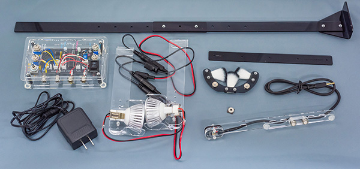
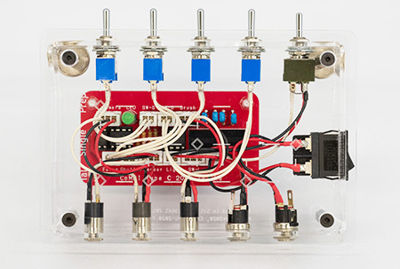
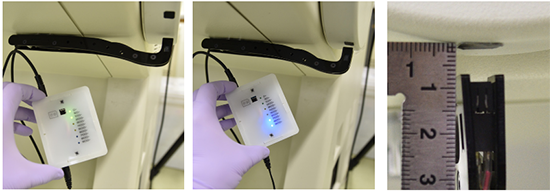

Self-made devices/自作装置
If you are considering installing one, please feel free to contact me and I can provide the devices. Or, if you are familiar with electronic engineering using a soldering iron, you can make essential devices by yourself. However, the plastic case is made of acrylic boards using a laser cutter, which may not familiar in the lab. Development is based on Arduino.
導入をお考えでしたら、お気軽に連絡をください、こちらで工作した物を用意できます。もしくは、ハンダごてをつかって電子工作をされている方なら、すべて自作することも可能です。ただし、ケースに関しては、アクリル板をレーザー加工して自作しています。開発のベースはArduinoです。
CoMBI-Universal type, 2021.10-current
Universal type is compatible with any type of microtome, including a cryostat, rotary microtome, and sliding microtome. All information including code, parts list, and drawing for laser cutting, is available on GitHub. https://github.com/combi-3d/CoMBI-Universal.
最新のユニバーサル型は、ほぼすべてのミクロトームに適合します。コード、部品リスト、設計図はすべてGitHubで公開しています。

Controller/コントローラー
The controller controls the camera, sensor, and LED lamps. The microcontroller ATmega328P synchronizes the camera shutter and the sensor using optocoupler.
コントローラは、カメラ、センサー、LEDランプを制御します。マイコンが、カメラのシャッターとセンサーを同期しています。主な部品は、ATmega328P、フォトカプラ（optocoupler）です。
Sensor/センサー
A Hall sensor detects the position of the handle. The magnet on the handle is detected by the sensor.
ホールセンサーが、ハンドル位置を検知します。ハンドルにネオジム磁石を貼っておいて、それをセンサーが検知します。
LED lamps/LED照明
Two lights illuminate the block surface diagonally. Compared with a single frontal light and two diagonal lights, the two diagonal lights produce more contrast on the block surface image.
斜めから2灯で、ブロック面を照らします。正面１灯と、斜め2灯を比較したところ、斜め2灯のほうが、ブロック面像で陰影が出やすいので、斜めを採用しました。
Brush/ブラシ
The brush keeps the block face clean.
ブロック面をキレイに保ちます。
Codes/コード
Codes for CoMBI-U are available on GitHub / コードは公開しています
CoMBI-C (cryostat) 2017-2021
Controller/コントローラー
The controller controls the camera, sensor, brush, and LED lamps. The microcontroller ATiny85 synchronizes the camera shutter and the sensor using optocoupler.

コントローラは、カメラ、センサー、ブラシ、LEDランプを制御します。マイコンが、カメラのシャッターとセンサーを同期しています。主な部品は、ATtiy85とフォトカプラ（optocoupler）です。
Sensor/センサー
An infrared reflective sensor detects the position of the handle. The white handle is attached with a piece of black low-reflective sheet, which is detected by the sensor.
赤外線反射センサーが、ハンドル位置を検知します。白いハンドルに黒い低反射シート片を張ってあり、それをセンサーが検知します。
LED lamps/LED照明
Two lights illuminate the block surface diagonally. Compared with a single frontal light and two diagonal lights, the two diagonal lights produce more contrast on the block surface image.
斜めから2灯で、ブロック面を照らします。正面１灯と、斜め2灯を比較したところ、斜め2灯のほうが、ブロック面像で陰影が出やすいので、斜めを採用しました。
Brush/ブラシ
The brush keeps the block face clean. I install the motor to move brush left and right, but brush can keep the block surface clean without movement.
ブロック面をキレイに保ちます。モータで左右に動かしていますが、動かなくてもブロック面をキレイに保ちます。
Codes/コード
Sensor and camera/センサーとカメラシャッター
Development was done in Arduino IDE, and the components used were ATtiny85, Rohm RPR-220, Toshiba TLP785GB, and LEDs. In the published paper, the threshold was set to 250. Recently, I prefer to use 400-500. I set the threshold with enough allowance because I have found that the degree of whiteness varies among cryostat handles in various locations, and that sensor value varies depending on the lot of sensors and the quality of self-made devices.
開発環境は、Arduino IDEで、使用部品はATtiny85, Rohm RPR-220, Toshiba TLP785GB, LEDです。発表論文では、閾値を250にしていました。最近は400-500を好んで使っています。各地のクリオスタットハンドルで白色の程度にバラツキがあることや、センサーのロットや工作物の出来不出来によってセンサー値にバラツキが出ることが分かってきたので、余裕をもった閾値にしています。
Codes for CoMBI-C are available on GitHub / コードは公開しています
//***********************************************************
// Designed for the sensor device, a part of the CoMBI system.
// ATtiny85 syncs cryostat handle and shutter release,
// using a photoreflector (Rohm RPR-220) and an optocoupler (Toshiba TLP785GB).
// Upload the code with the internal clock 1 MHz.
//***********************************************************
const int ledPin = 1; const int shutterPin = 0; const int sensorPin = A2; int sensorVal = 0;
//connect LED to 1
//connect an optocoupler to 0
//connect the sensor signal to A2
void setup() {
pinMode(ledPin, OUTPUT); pinMode(shutterPin, OUTPUT);
digitalWrite(ledPin, HIGH); delay(200);
digitalWrite(ledPin, LOW); delay(200);
digitalWrite(ledPin, HIGH); delay(200);
digitalWrite(ledPin, LOW);
}
// Twincle LED to sign turning on
void loop() {
sensorVal = analogRead(sensorPin);
delay(2);
if (sensorVal > 250){
// If the sensor detect the light absorbing sheet
digitalWrite(shutterPin, HIGH);
// Release shutter
delay(10);
digitalWrite(shutterPin, LOW);
digitalWrite(ledPin, HIGH);
// Indicate the sheet position and shutter release by LED
delay(2000);
digitalWrite(ledPin, LOW);
}
else{
digitalWrite(ledPin, LOW);
digitalWrite(shutterPin, LOW);
}
}
Brush movement/ブラシの制御
Arduino IDE, Code for ATtiny85, Micro Servo SG92R
//***********************************************************
// Designed for the cleaning device, a part of the CoMBI system.
// ATtiny85 controlls a Micro Servo SG92R.
//
// Download and Install "SoftwareServo.h" into the Arduino Software.
// Modify the SoftwareServo.h file to use <Arduino.h> instead of <WProgram.h>.
// Upload the code with the internal clock 1 MHz.
//
// (In case of Arduino/Genuino Uno, use "Servo.h".)
//***********************************************************
#include <SoftwareServo.h> SoftwareServo myservo;
// create servo object
void setup() {
myservo.attach(0);
// attach the servo on pin 0 to the servo object
}
void loop() {
myservo.write(5);
// sets the servo position 5
delay(300);
// waits for the servo to get there
SoftwareServo::refresh();
// recommended
myservo.write(55);
// sets the servo position 55
delay(300);
SoftwareServo::refresh();
}
Parts/部品
All information, including parts and prices, is available in Scientific Reports 2017,7:3645. I purchase the parts from the following stores in Japan; Akitsuki, Sengoku, Switch Science, Marutsu, and Cainz.
使用する部品、価格など、すべての情報は、公開されています（Scientific Reports 2017,7:3645）。部品は、秋月、千石、スイッチサイエンス、マルツ、カインズで購入しています。
Printed board/プリント基板
Optional. This is a memo when I made a printed circuit board at P-board.com.
プリント基板をP板.comで作ったときのメモです。
- CADLUS X (Win), Nisol, Version X is a freeware, specific for P板-com, Jpn （I use this app and site to make printed board for CoMBI.）
- KiCAD (Win, Mac), Open-source, Eng, Jpn (in practicing)
- Eagle (Win, Mac), AUTODESK, Free for academic use, up to 80cm2, not for commercial use.(just installed)

Printed board for CoMBI-C Latest ver is "2020", which has been improved since the release on 2017 at Sci Rep.
Sensor checker/センサーチェッカー
I made a sensor checker so that I can adjust the sensors remotely. 2020.11

リモートでセンサーを調整できるように、センサーチェッカーをつくりました。2020.11
CoMBI-S (Sliding microtome)
CoMBI-S motorized type (2021.7-current)
See Scientific Reports (2021) for detail.
Alminium frame, motor and camera controller were made to order at KIRYU DENSHI (Gunma, Japan). Ask me if you need. LED lights are self-made. Two 3W LED lumps (MR16 type) illuminate block-face diagonally.
アルミ製フレームと、モータ、カメラ制御装置は、オーダーメイドできます。桐生電子（群馬県）。LEDランプは、3Wの電球タイプを斜め照射するように設置します。
CoMBI-S manual type (2021.7-2021.10)
You can make using an Arduino, optocouplars, and infrared-reflective sensors. The circuit is available on Scientific Reports (2021) as supplimentary information. Codes for "CoMBI-S manual type" are available on GitHub
アルデュイーノと、フォトカプラ、赤外線反射センサーをつかって自作できます。回路は、発表論文のサプリメントに記載しました。また、コードはGithubにあります。